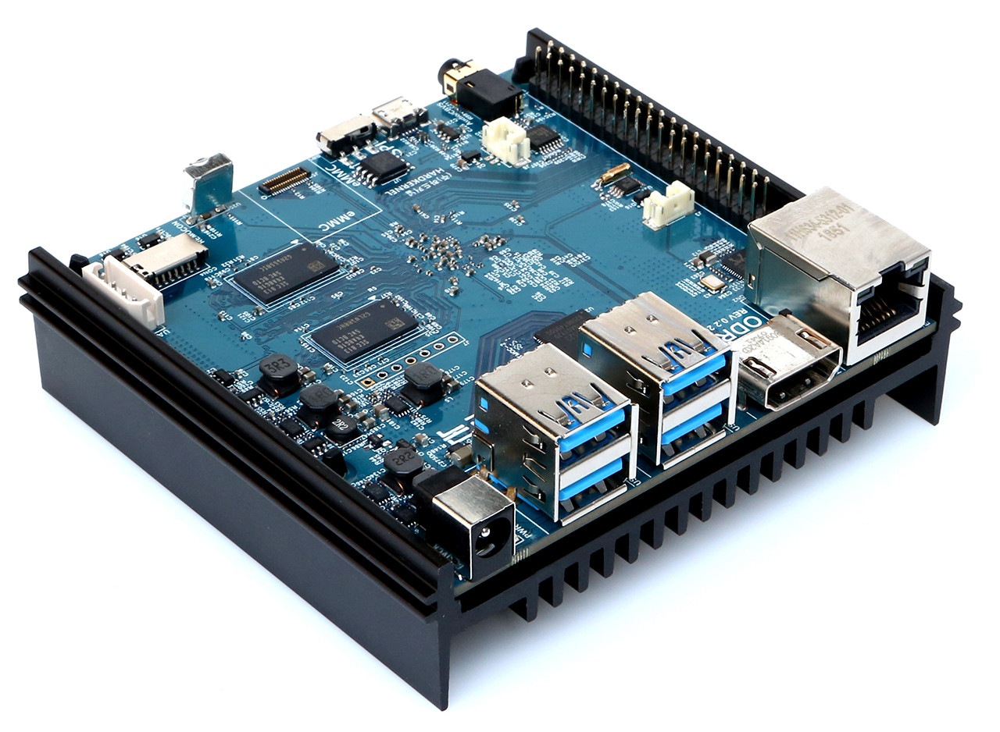

ODROID N2 (odroid-n2)
Jump to navigation
Jump to search
|
 odroid-n2 | |
| Manufacturer | ODROID |
|---|---|
| Name | N2 |
| Codename | odroid-n2 |
| Released | 2019 |
| Category | testing |
| Original software | Ubuntu or Android |
| postmarketOS kernel | null |
| Hardware | |
| Chipset | Amlogic S922X (rev A) |
| CPU | Quad-core Cortex-A73 @ 1.8GHz and Dual-core Cortex-A53 @ 1.9GHz |
| GPU | Mali-G52 GPU with 6x Execution Engines @ 800MHz |
| Display | HDMI 2.0 connector up to 4K@60Hz with HDR,CEC,EDID |
| Storage | eMMC connector (8/16/32/64/128GB) and microSD slot (DS/HS modes up to UHS-I SDR104) |
| Memory | 2GB/4GB DDR4 with 32bit bus width, 2640 MT/s data rate (PC4-21333 grade), 1.2V low power design |
| Architecture | aarch64 |
{kind=link}
This device is marked as not booting.
| USB Networking |
Unavailable
|
|---|---|
| Flashing |
Unavailable
|
| Touchscreen |
Unavailable
|
| Display |
Works
|
| WiFi |
Unavailable
|
| FDE |
Unavailable
|
| Mainline |
Broken
|
| Battery |
Unavailable
|
| 3D Acceleration | |
| Audio |
Unavailable
|
| Bluetooth |
Unavailable
|
| Camera |
Unavailable
|
| GPS |
Unavailable
|
| Mobile data |
Unavailable
|
| SMS |
Unavailable
|
| Calls |
Unavailable
|
| USB OTG / USB-C Role switching |
Unavailable
|
| NFC |
Unavailable
|
| Accelerometer |
Unavailable
|
|---|---|
| Magnetometer | |
| Ambient Light | |
| Proximity | |
| Hall Effect | |
| Barometer | |
| Power Sensor | |
| Camera Flash | |
|---|---|
| Keyboard | |
| Touchpad | |
| USB-A | |
| HDMI/DP | |
| Ir TX | |
| Ir RX | |
| Stylus | |
| Haptics | |
| Ethernet | |
| FOSS bootloader | |
Contributors
Users owning this device
- Vincele (Notes: Void linux (musl), mainline kernel, petitboot in SPI, OS on SD)
How to enter flash mode
Installation
Notice
See ODROID_N2+_(odroid-n2plus) for more information. Mostly all of what's there applies to this device as well, including the installation instructions.
Differences between N2 and N2+
1. N2 boards have a RTC backup battery connector unlike N2+ which have a RTC backup battery holder instead.
2. N2 and N2+ both use s922x SoCs. However, each of them use different revisions of that SoC. N2 use revision A of the SoC while N2+ use revision C of the SoC which has slightly higher clock speed than rev A.
3. N2 and N2+ have different pcb colors.